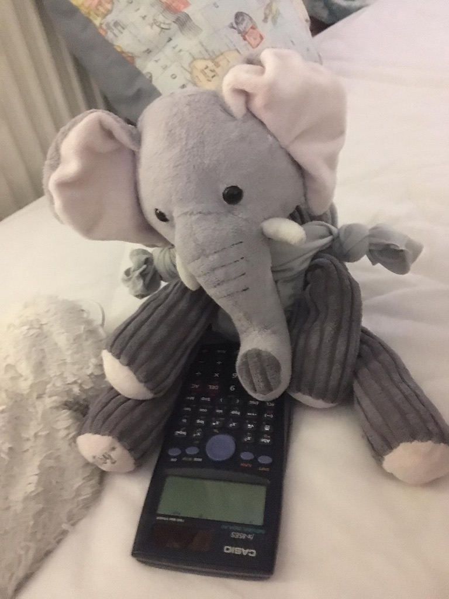
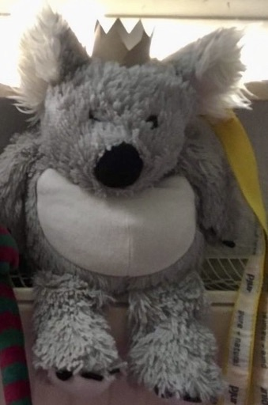

Unser letztes Abenteuer
Die Rasselbande hatte von einer sagenumwobenen Schatzinsel namens "Kapuzeninsel" gehört, die angeblich von einem berühmten Piratenkapitän namens Käpt'n Krähe als Versteck für seinen legendären Schatz genutzt wurde. Voller Abenteuerlust beschlossen sie, sich auf die Suche nach diesem Schatz zu machen.
Mit einer alten Schatzkarte in der Hand begaben sich Frido und seine Freunde auf eine abenteuerliche Reise über das tückische Meer. Elli studierte die Karte mit ihrer gewohnten Sorgfalt, während Bambi, immer modisch mit einer Fliege gekleidet, die Crew mit seinem unermüdlichen Enthusiasmus motivierte.
Unter den Abenteurern befanden sich auch Tante DD, eine lebhafte und abenteuerlustige Dame, die immer für eine Überraschung gut war, und Brudi Sim, ein junger Entdecker mit einem unerschütterlichen Sinn für Abenteuer.
Auf dem Weg zur Insel gerieten sie in einen Sturm, der das Schiff fast zum Kentern brachte. Doch dank der Ruhe und Geschicklichkeit von Franklin am Steuer in tiefer Nacht und der ruhigen Fenstersicht von Han Solo überstanden sie die gefährlichen Gewässer.
Schließlich erreichten sie die Kapuzeninsel und begannen mit der Suche nach dem verborgenen Schatz. Doch sie waren nicht allein. Eine Bande furchterregender Piraten unter der Führung von Käpt'n Krähe selbst hatte ebenfalls Wind von dem Schatz bekommen und war entschlossen, ihn als ihren eigenen zu beanspruchen.
In einem spannenden Wettlauf gegen die Zeit und die Piraten durchsuchte die Rasselbande die Insel nach Hinweisen. Sie kämpften sich durch dichte Dschungel, überwanden tödliche Fallen und setzten ihre Klugheit und Entschlossenheit ein, um den Schatz zu finden, bevor die Piraten es taten.
Schließlich, nach einer Reihe von aufregenden Abenteuern und nervenaufreibenden Kämpfen mit den Piraten, gelang es der Rasselbande, den legendären Schatz zu finden. Doch statt Gold und Juwelen entdeckten sie etwas viel Wertvolleres: eine alte Karte, die zu einem weiteren geheimen Versteck führte, das sie auf ein neues Abenteuer schicken würde.
Und so segelte die Rasselbande, siegreich und voller Vorfreude auf kommende Abenteuer, in den Sonnenuntergang davon, bereit für alles, was das nächste Kapitel ihrer epischen Reise bringen würde. Tante DD und Brudi Sim feierten ihren Erfolg mit einem fröhlichen Tanz auf dem Deck, während die anderen sich auf die nächste Etappe ihrer Abenteuerreise vorbereiteten.
Team Rasselbande
Fridolin

Frido, der mutige und charismatische Anführer, stellt sich gerne vor Besuch als Kuscheltier dar, um die anderen zu überraschen und zum Lachen zu bringen. Seine charmante Art und sein Talent, sich in verschiedene Rollen zu versetzen, machen ihn zu einem beliebten Mitglied der Gruppe.
Elli

Elli ist die kluge und einfallsreiche Denkerin der Rasselbande, obwohl sie manchmal in ihren Gedanken verloren scheint. Trotz ihrer zierlichen Statur würde Sie alles für einen Schokoriegel tun. Ihre tollpatschige Art verleiht ihr eine gewisse liebenswerte Unbeholfenheit.
Bambi

Bambi, der immer eine Fliege trägt, vergisst gerne, dass er seine Fliegen nur geborgt hat. Seine unbeschwerte Natur und sein freundliches Wesen machen ihn zum Liebling der Gruppe, auch wenn er manchmal etwas vergesslich ist.
Franklin

Franklin, der geduldige und beharrliche Freund, hat Angst im Dunkeln. Trotz seiner Tapferkeit in anderen Situationen macht ihm die Dunkelheit Angst, und er sucht oft Schutz bei seinen Freunden, wenn die Nacht hereinbricht.
Han Solo

Han Solo, der ständige Begleiter bei all ihren Abenteuern, übernimmt die wichtige Rolle des Boten, der Nachrichten zwischen den Mitgliedern austauscht. Seine Vorliebe für Fenster mag eigenartig erscheinen, aber seine Tapferkeit und sein Sinn für Humor machen ihn zu einem unverzichtbaren Teil des Teams.